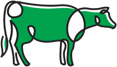

Cattle Investment Program
The model is simple: Nigerians irrespective of their location can lease land from Q Seedrs Investment, Choose the kind of Crop they wish to farm from the list of crops available, and then provide the funds to farm these lands. Knowing that one of the major drawbacks of Agriculture is the intensive attention which it requires, Q Seedrs is undertaking to manage the entire process for the investors.
Cattle
The Cattle Investment Program is a new Investment which was introduced to the general public after successful Pilot study for the past 14 months.
This Investment Opportunity is NOT open to every Investors but those Investors who demonstrate that they understand the scope and vision of the scheme without needless emphasis on quick Returns.
Major details about this Program
The Total Minimum Investment is N600,000 and Investment is Accepted in Multiples of N200,000.
The Cost of Procurement for 3 Cows is N300,000 and The Cost of Feeding, Medication and Management for 3 Years is Expected to be N300,000.
In Three Years, Your Expected Returns is Gross of 7- 9 Cows excluding the Initial 3 (We Expect a Mortality Rate of 20%).
The Net Returns to investors on a Block of 3 Cows is 10 - 12 Including the Initial Cows. Q-Seedrs would strive to reduce mortality rate with monitoring from professional Veterinarians
After 3 Years, Investors may decide to sell the Initial 3 Cows at about 40% Profit and allow the remaining 7 or 9 cows to continue with the process. We can do about 18 cows in 6 years.
Q-Seedrs & investor can discuss dynamics after the first 3 years to agree on increasing the cows, selling and/or breeding the remaining for meat, and work together to begin milk production
The projection of Q-Seedrs Investment scheme is 900 cows in 5 years and the need to setup a diary plant arises, the investor and Q-Seedrs will negotiate terms for continuity and sustainability.
There’s an MOU with NAPRI A.B.U Zaria regards artificial insemination of hybrid sperms and fertility treatment for high milk yield and high meat yield. More updates later.
Our Current expected number of Cows is based on conservative baseline numbers, meaning that we can get more with proper Management and Q-Seedrs is working on these.